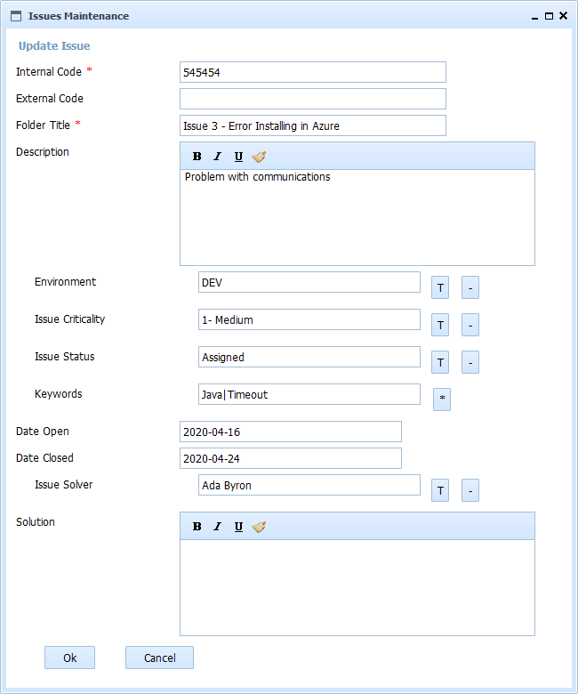

Help SMO Product Issues Update
This form allows to modify an existing issue. All the fields follow the interface conventions of OpenProdoc:
- Standard fields: Without special mark
- Required fields: With a character "*"
- Thesaurus controlled: With a button with character "T" for selecting and "-" for deleting
- Multivalued: With a button with character "*"
- Multivalued and Thesaurus controlled: With a button with characters "T*"
With the default configuration, the fields to fill are:
- Internal Issue Code: Read Only Internal unique Code/Identifier assigned when opening the Issue
- External Issue Code: External unique Code/Identifier of the Issue if you open the issue to the developer or to the community
- Title: Short description of the issue
- Description: Long description of the issue
- Environment: Environemnt which the error ocurred
- Criticity: One of the possible levels of criticity defined (Critical, non blocking,..
- Status: One of the possible status defined (pending, solved, assigned, waiting,..)
- Keywords: Keywords or short terms that help to tag the problem and the solution
- Date Open: Date in which the Issue was open
- Date Closed: Date in which the Issue was vlosed
- Technical Assigned: Technical who is analizing and solving the issue
- Description: Long description of the solution for solving the issue

In SMO Tree there is a complete view of operations and forms.